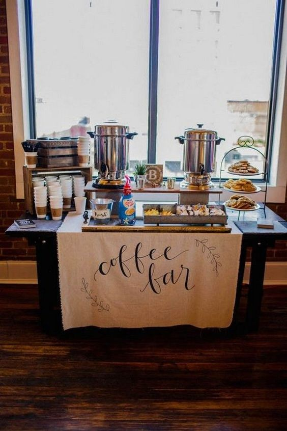

Coffee party
Business
Välkomna till företagets kaffeparty – en stund av avkoppling och samvaro mitt i arbetsveckan! Här på kontoret har vi skapat en mysig oas med doftande kaffebryggare och eleganta kaffeserviser. Våra kollegor samlas runt kaffebordet för att diskutera både jobbrelaterade ämnen och mer personliga intressen, allt medan de avnjuter en mångfald av kaffesorter och förstklassiga bakverk. Det är en möjlighet för oss att koppla av och bygga starkare band med våra kollegor, att dela idéer och skapa en positiv atmosfär. Kaffet flödar lika fritt som samtalen, och vi lämnar detta kaffeparty med både nöjda magar och förnyade arbetsrelationer.
Private
Välkommen till Janes kaffeskapande extravaganza! Vi har samlats här idag för att njuta av en härlig stund tillsammans med doften av nybryggt kaffe och goda samtal. Jane har förberett en uppsjö av olika kaffesorter från runt om i världen, från kraftfulla espresson till milda kaffeblandningar. På bordet står också en dignande buffé av läckra tilltugg, allt från hembakade kakor till smaskiga smörgåsar. Vi samlas runt kaffebordet, för att utforska och diskutera smaker och dofter medan vi delar historier och skratt. Det är en kväll fylld med gemenskap och kaffekultur, där varje gäst får upptäcka nya favoriter och njuta av den fantastiska världen av kaffe.